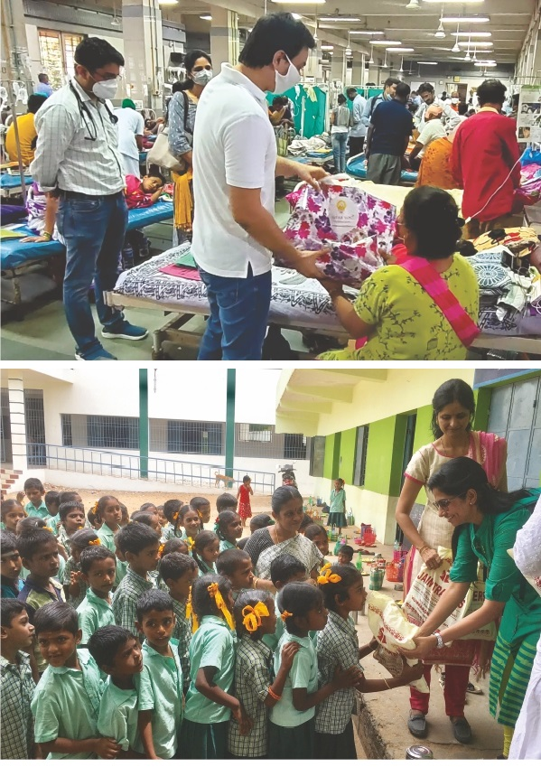

Mahadaan:
The Gift of Transformation
The foundation regularly organizes Mahadaan, a sacred charitable event under Acharya Upendra Ji's direction. Acharya Ji teaches the righteous way of giving donations according to our scriptures.
Following this donation process enables seekers to resolve karmic debts from past lives, fostering prosperity. Nine societal groups receive regular support with food and essentials delivered with compassion: Sanyasis, Brahmans, Children, Orphans, Specially-abled individuals, Married women, Poor citizens, Senior citizens, and Diseased persons.
"The world is interested in givers, not takers; so be a giver."
About Mahadaan
Mahadaan (महादान)
"A Sacred Offering That Lives Beyond You"
Mahadaan means "Great Charity" — a selfless act of giving performed with pure intention, without expectation, for the welfare of society. In our spiritual tradition, charity is not merely help — it is Dharma. It purifies the giver and uplifts the receiver.
When Mahadaan is performed in the presence of a Jivit Guru (living spiritual master), it becomes a divine blessing in action. Under the enlightened guidance of Acharya Upendra Ji, every offering reaches the right hands, at the right time, for the right purpose.
The Guru Transforms:
- ✦ Charity into Seva (selfless service)
- ✦ Donation into Devotion (spiritual offering)
- ✦ Contribution into Sadhana (spiritual practice)
The Truth of Giving
Mahadaan is not about how much you give. It is about purity of intention, compassion in the heart, and selflessness in action.
Even a small act done with sincere feeling becomes Mahadaan. True giving transforms not just the receiver—it transforms the giver. It softens the heart, removes fear of loss, awakens gratitude, and replaces ego with humility.
"At the end of life, wealth stays here. Status stays here. Possessions stay here. Only karma travels forward."
Mahadaan ensures that what travels with your soul is light — not burden.
Our Impact
How Mahadaan Works
Choose a Program
Select from wellness, yoga, meditation, or community transformation programs that resonate with your values.
Give Generously
Make a one-time donation or become a sustaining member of our community of support.
Transform Lives
Your gift enables direct impact: training, retreats, accessibility initiatives, and global reach.
Programs Supported by Mahadaan
Comprehensive 200-hour and advanced certifications for aspiring yoga instructors and wellness facilitators.
Immersive shibirs and retreats combining yoga, meditation, pranayama, and holistic wellness practices.
Scholarships and subsidized programs for underserved communities and low-income participants.
Studies on the effectiveness of traditional practices and their integration with modern wellness.
One-on-one guidance and group mentoring with experienced spiritual teachers and wellness practitioners.
Accessible courses, webinars, and digital resources bringing Antaryog's wisdom to global audiences.
Stories of Transformation
Begin Your Mahadaan Today
Make a meaningful gift that transforms lives. Your support powers spiritual education, wellness, and community transformation worldwide.